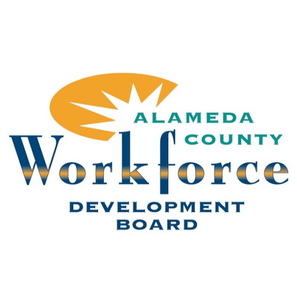
Alameda County WDB
Serves: Alameda County (excluding Oakland)
Visit websiteOur state is powered by 45 business-led Local Workforce Development Boards. They oversee the America's Job Centers of California (AJCC) in every region — connecting residents to training and businesses to skilled talent. Find the board serving your community below.

Serves: Alameda County (excluding Oakland)
Visit website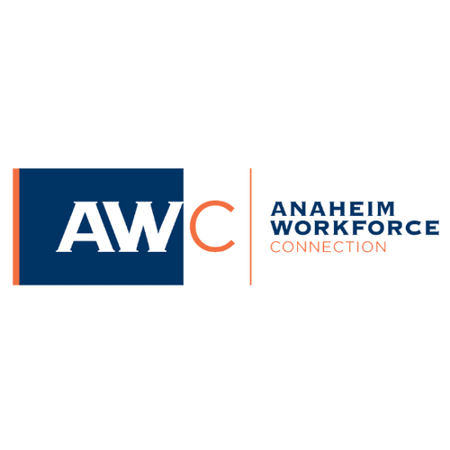
Serves: City of Anaheim
Visit website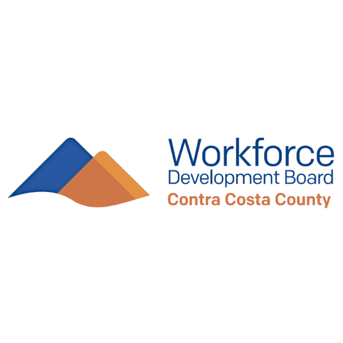
Serves: Contra Costa County
Visit website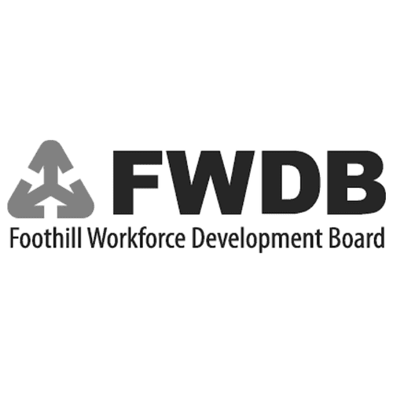
Serves: Pasadena, Arcadia, Duarte, Monrovia, Sierra Madre, South Pasadena
Visit website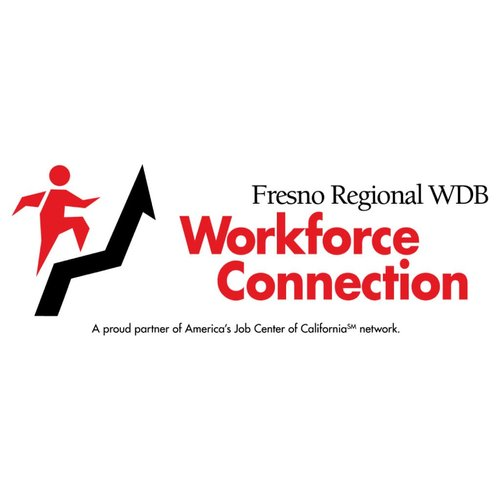
Serves: Fresno County
Visit websiteServes: Alpine, El Dorado, and Placer Counties
Visit website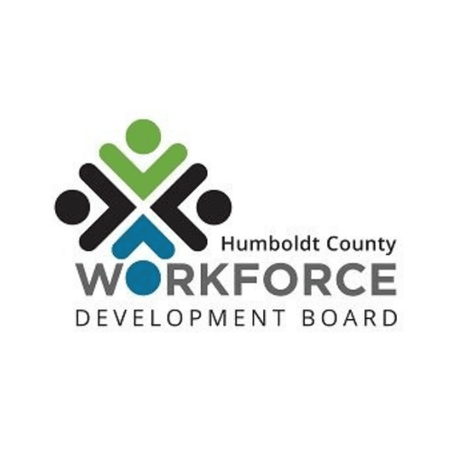
Serves: Humboldt County
Visit website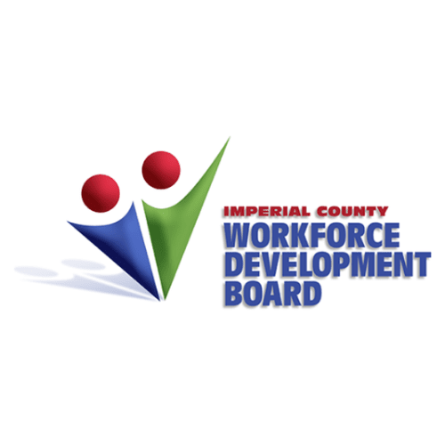
Serves: Imperial County
Visit website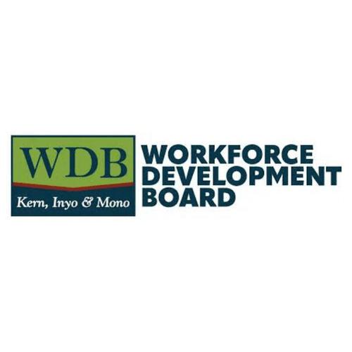
Serves: Kern, Inyo, and Mono Counties
Visit website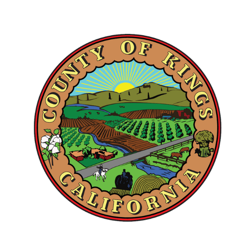
Serves: Kings County
Visit websiteServes: Cities of Long Beach and Signal Hill
Visit website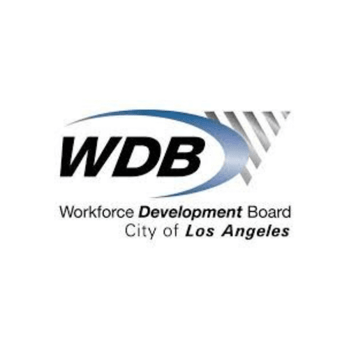
Serves: City of Los Angeles
Visit website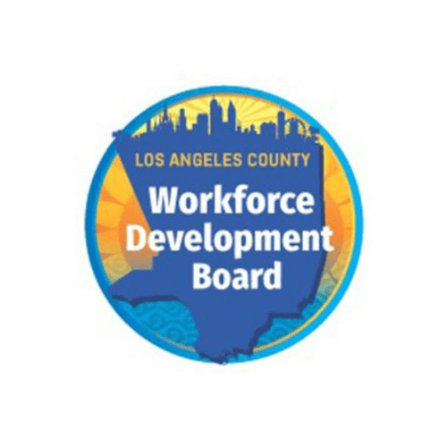
Serves: Los Angeles County
Visit websiteServes: Madera County
Visit website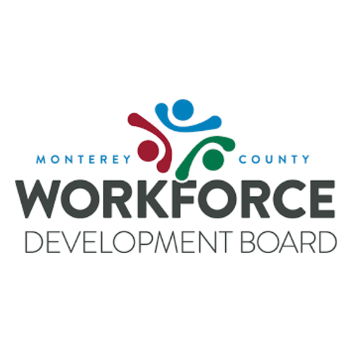
Serves: Monterey County
Visit websiteServes: Amador, Calaveras, Mariposa, and Tuolumne Counties
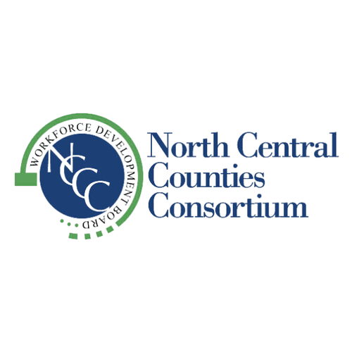
Serves: Colusa, Glenn, Sutter, and Yuba Counties
Visit websiteServes: 11 Northern Counties
Visit website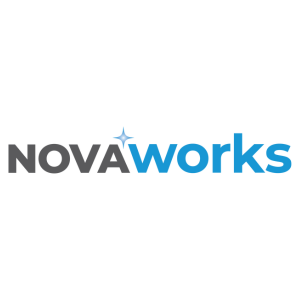
Serves: San Mateo County & Silicon Valley
Visit website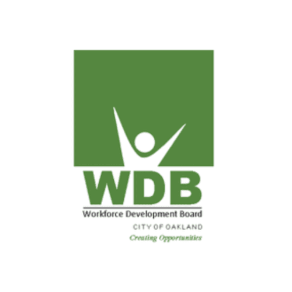
Serves: City of Oakland
Visit websiteServes: Orange County
Visit website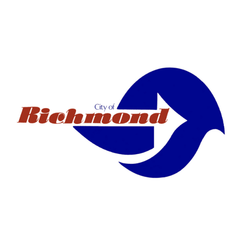
Serves: City of Richmond
Visit website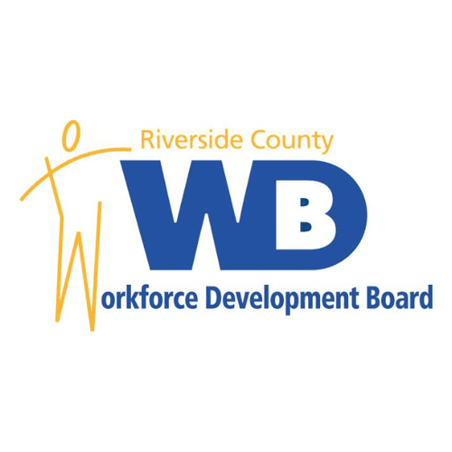
Serves: Riverside County
Visit website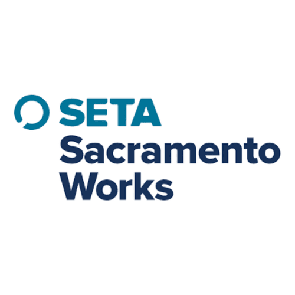
Serves: Sacramento County
Visit website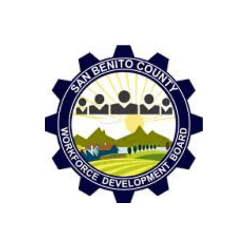
Serves: San Benito County
Visit websiteServes: San Bernardino County
Visit website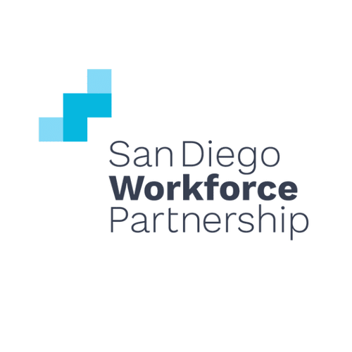
Serves: San Diego County
Visit websiteServes: San Francisco City/County
Visit website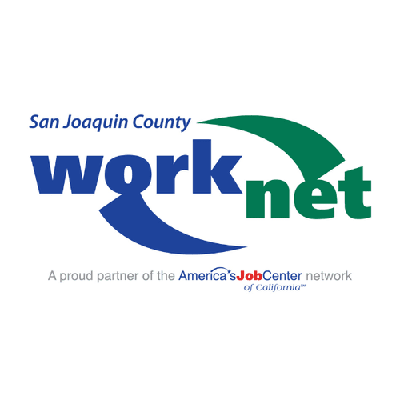
Serves: San Joaquin County
Visit website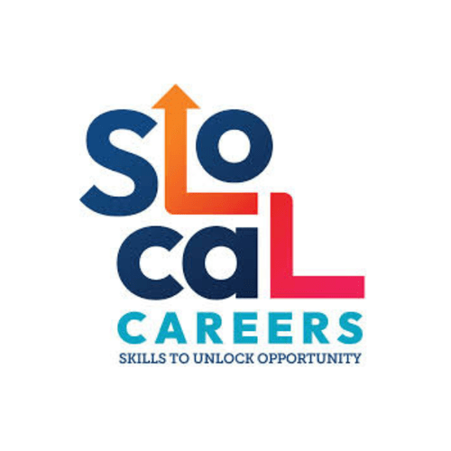
Serves: San Luis Obispo County
Visit website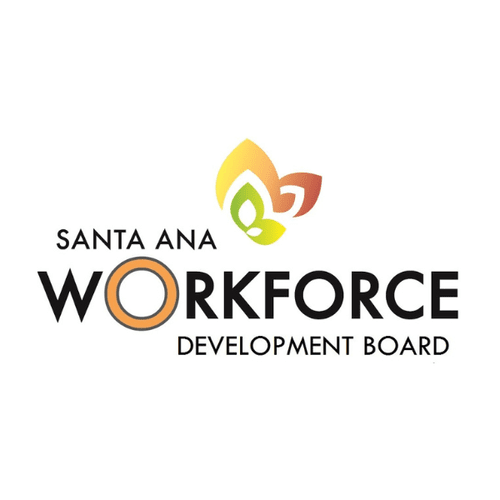
Serves: City of Santa Ana
Visit website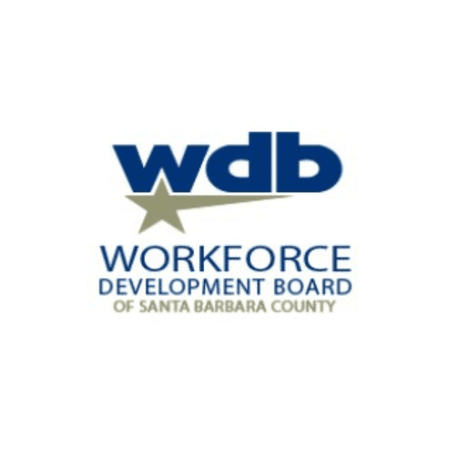
Serves: Santa Barbara County
Visit websiteServes: San Jose & Santa Clara
Visit website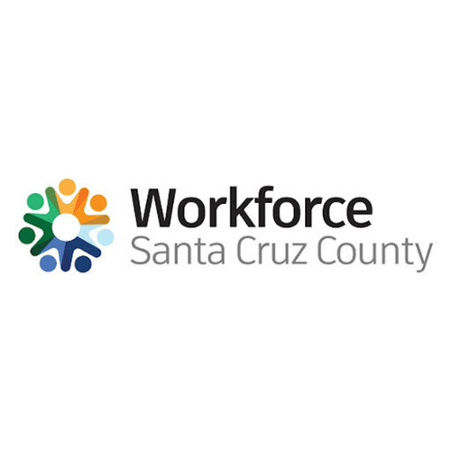
Serves: Santa Cruz County
Visit website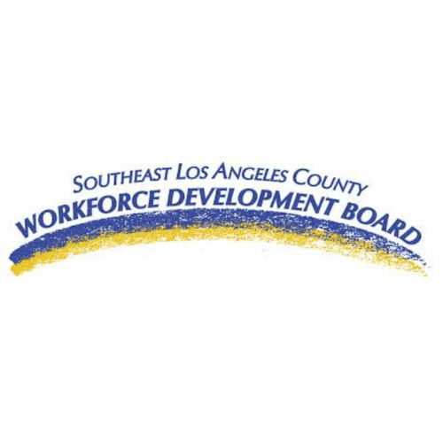
Serves: Artesia, Bellflower, Cerritos, Downey, Lakewood, Norwalk
Visit website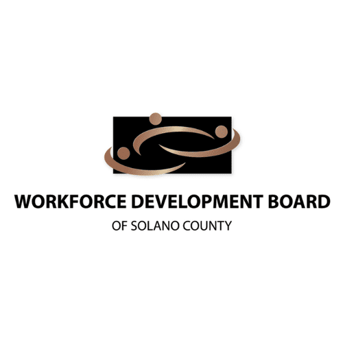
Serves: Solano County
Visit website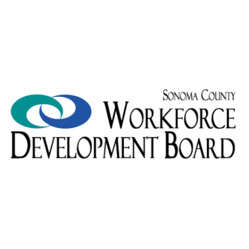
Serves: Sonoma County
Visit websiteServes: Inglewood, Torrance, Carson, Hawthorne, Lawndale, El Segundo, Gardena, Lomita, Hermosa Beach, Manhattan Beach, Redondo Beach
Visit website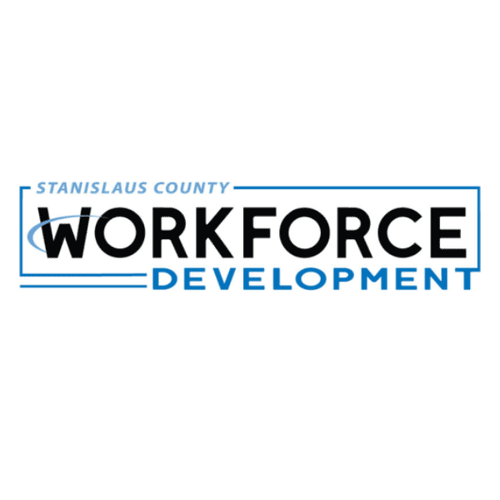
Serves: Stanislaus County
Visit website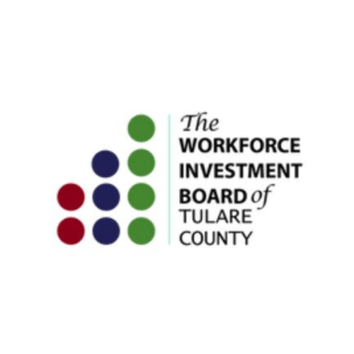
Serves: Tulare County
Visit website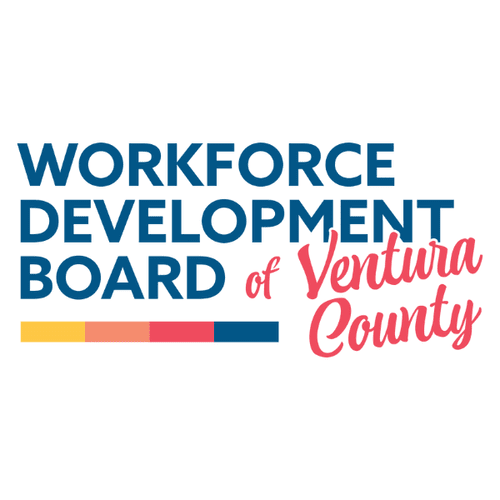
Serves: Ventura County
Visit websiteServes: Burbank, Glendale, La Cañada Flintridge
Visit website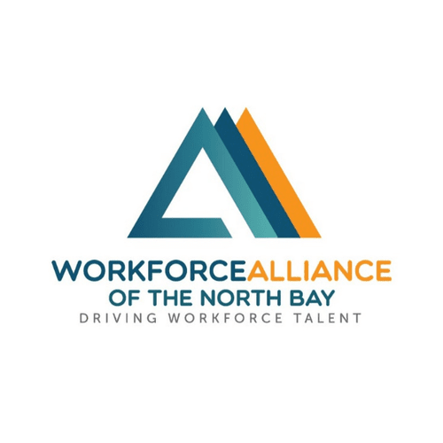
Serves: Lake, Marin, Mendocino, Napa
Visit website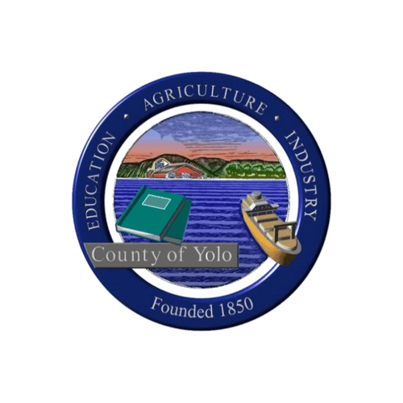
Serves: Yolo County
Visit websiteNo boards match your search. Try a county or city name.